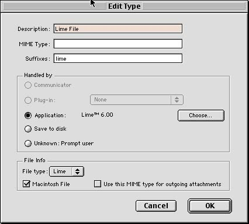
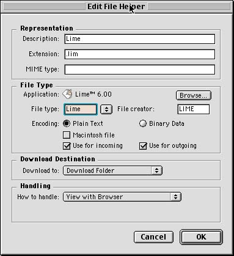
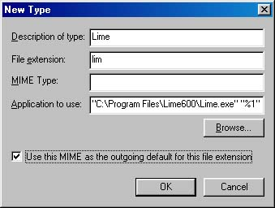
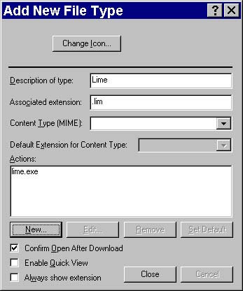

| Physics Lab Haptic Pendulum Project | A-Prompt | Music Notation |
| Accessible Interactive Learning Tools | MathML Project |
Providing Access to Music Notation on the WWW
Ideally Music Notation on the World Wide Web would be provided in an electronic format that described the notation in enough detail to accommodate the rendering of the notation regardless of output device (screen, screen reader, Braille display). As this technology is still being developed, the publisher of music notation on the world wide web must resort to other methods to provide access to the material.
Interim Methods
Currently music notation is rendered on the world wide web in a graphical format. This way of rendering music notation is only accessible visualy. In order to provide the music notation in a way that users of alternative interfaces can access the publisher of the notation should provide the notational format linked to the picture. This will also allow the user to access the notation in an editable format which is useful for disseminating online music curriculum.
The Lime Notation Editor is a piece of shareware developed at the University of Illinois by the CERL Sound Group. In addition to being an affordable editor the Lime format has been used by Dancing Dots, a company developing access to music notation for users with visual impairments. For this reason it is recommended that the publisher of music notation use either the Lime notation format or NIFF (notational interchange file format) which can also be read by Lime.
Setting the MIME type of a Lime file in the users browser will make it easier for the user to consume music curriculum by enabling the browser to automatically open the file in the notation editor. Here is a description of the process.
To point this file to the Lime notation editor from your browser follow these steps:
For Netscape 4.x on Mac
- Open "Preferences" from the Edit menu of your Netscape browser.
- Select "Applications" from the "Navigator" category.
- Click the new button.
- Fill out the "Edit Type" dialog box as follows:
- 
- Click Choose after selecting the "Application" radio button and select your Lime notation editor.
- Click "OK" in the Edit Type dialog and the "Preference" dialog.
For Internet Explorer 5.x on Mac
- Open Preferences from the Edit menu of your Microsoft browser.
- Select "File Helpers" from the "Receiving Files" category.
- Click the add button.
- Fill out the "Edit File Helper" dialog box as follows:
- 
For Netscape 4.x on Windows
- Choose "Preferences" from the the "Edit" menu
- Select "Applications" and click the "New Type" button.
- Fill out the "New Type" dialog box as follows and click "OK":
- 
For Internet Explorer 5.x on Windows
Note that Internet Explorer uses the file type definition found in Windows Explorer. If Lime has already been installed on the machine the MIME type will already be set. However if the user does need to create or make adjustments to this information they can use the following steps.
- Open Windows Explorer and choose "Folder Options" from the "View" menu.
- Select "File Types" and click on "New Type"
- After you fill out the "Add New File Type" dialog box it should look something like this:
- 
Example of online music notation
Click the image to download a Lime file.
The Adaptive Technology Resource Centre
J.P. Robarts Library, First Floor, University of Toronto Information Commons
130 St. George St. Toronto, Ontario, Canada M5S 3H1
Telephone: (416) 978-4360 Fax: (416) 971-2629For additional information please e-mail Laurie Harrison